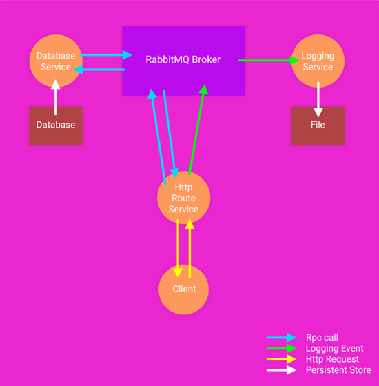

Demo App¶
Introduction¶
In this setup we will use Nameko to create an app with following functionalities. - setup for http traffic and http service. - rpc for inter-service calls. - event based logging.
Note
It’s a demo app therefore, we are using Nameko for both http and rpc traffic. We are mocking database as well as logging bits too. In real world we would prefer appropriate technologies for each of these parts.
Setup¶
We will create three services
- http_route_service - service facing client, accepts and responds to http requests.
- db_service - interact with low level persistent infrastructure.
- log_service - event based logging service and write logs to file.
Make sure RabbitMQ is running and localhost:8000 is free.
Use nameko run db_service log_service route_service to start these services.
Working¶
- Client will send a
GEThttp request throughlocalhost:8000. http_route_servicewill receive this request and sends an rpc request to RabbitMQ.- Broker will route this message to
database_serviceto get the records from persistent store. - These records will get returned to
http_route_servicewhich will use them to fill thehtml template. http_route_servicewill also dispatchget_peopleevent for logging to RabbitMQ broker.- Event message will get routed to
log_servicewhich writes this message to a file. - Finally,
http_route_servicereturns the http response with html.